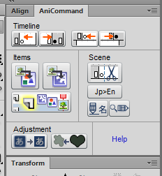

On Windows 7, it should be here.
%USERPROFILE%\AppData\Local\Adobe\Flash CS6\en_US\Configuration\Commands
On Mac it is apparently here (but I can't verify myself):
Macintosh HD/Users/username/Library/Application Support/Adobe/Flash CS6/en_US/Configuration/Commands
If you are using a version of Flash other than CS6, or a language other than US English, replace the corresponding parts of this folder path.
Similar to the Commands directory, on Windows it is here:
%USERPROFILE%\AppData\Local\Adobe\Flash CS6\en_US\Configuration\WindowSWF
Mac:
Macintosh HD/Users/username/Library/Application Support/Adobe/Flash CS6/en_US/Configuration/WindowSWF
The panel is accessible under Flash's menus: Window -> Other Panels -> AniCommand.
The panel is the same size as the alignment and transform windows, so I recommend docking it there.
All commands are also available under the Command menu. Because of this, you can also assign them to keyboard shortcuts.
Optional but recommended. Go to the menu for Edit -> Keyboard Shortcuts. Open the commands section, and assign a shortcut to each command. Recommended shortcuts are included in the help for each command, but feel free to assign them as you like.